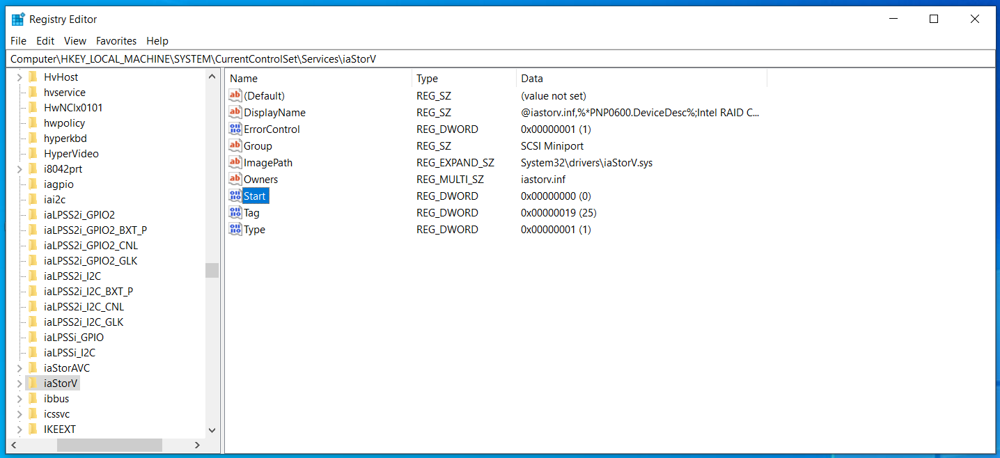
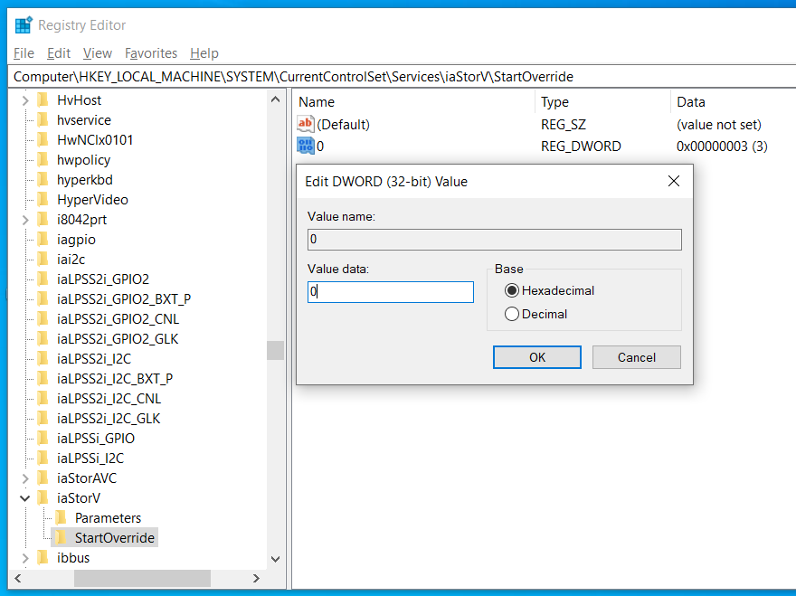
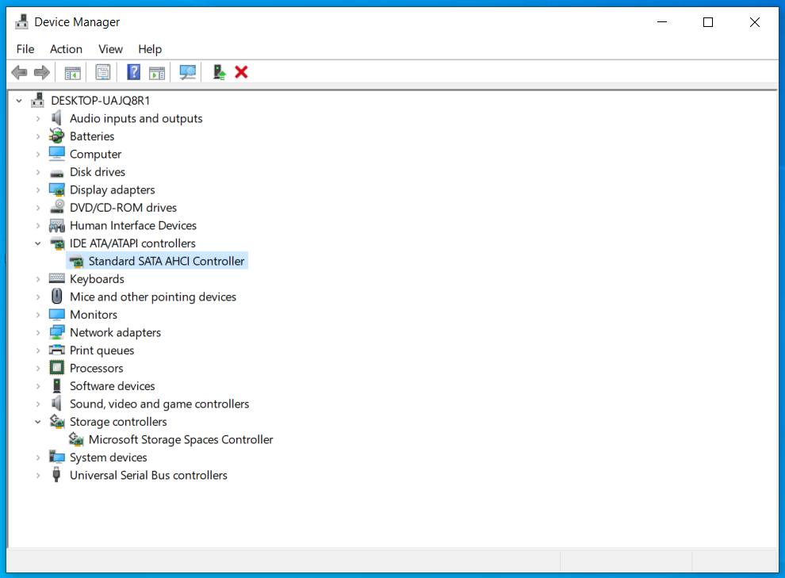
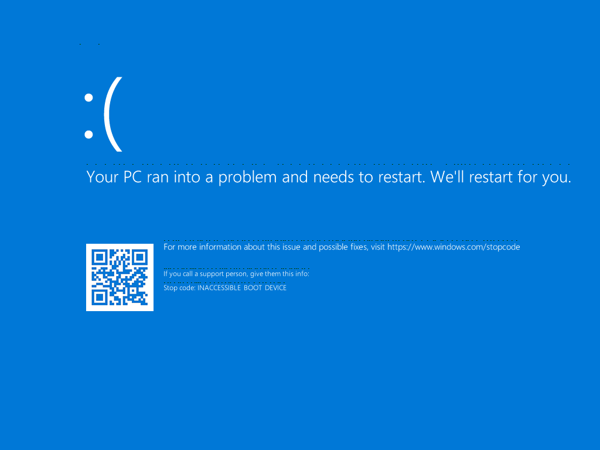
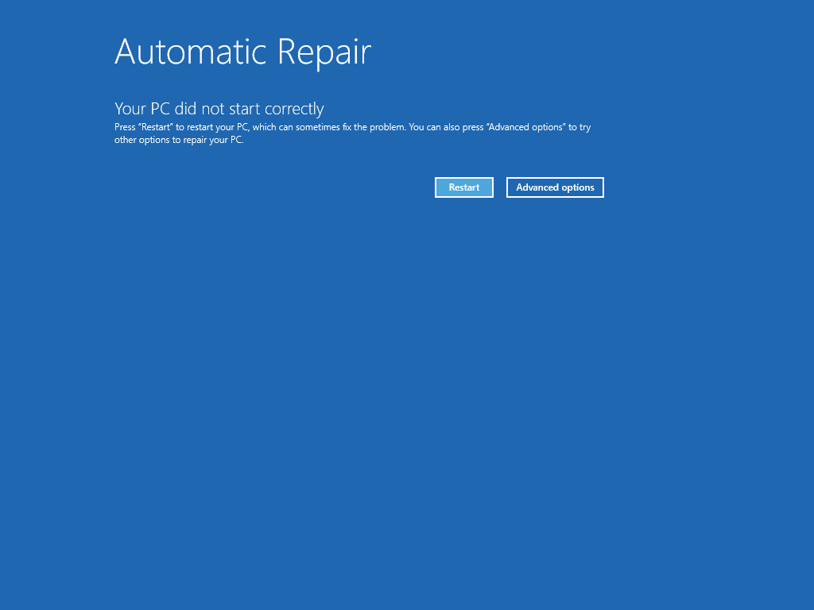
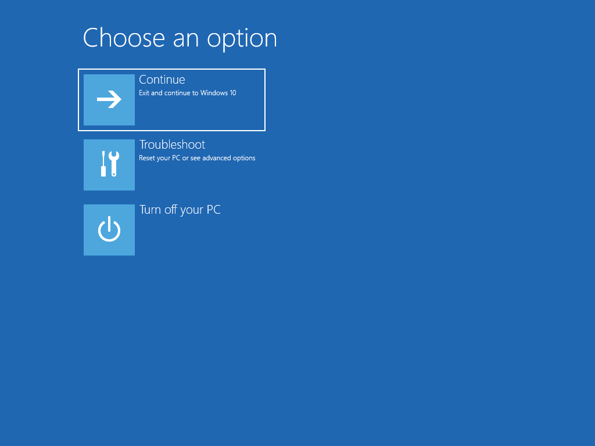
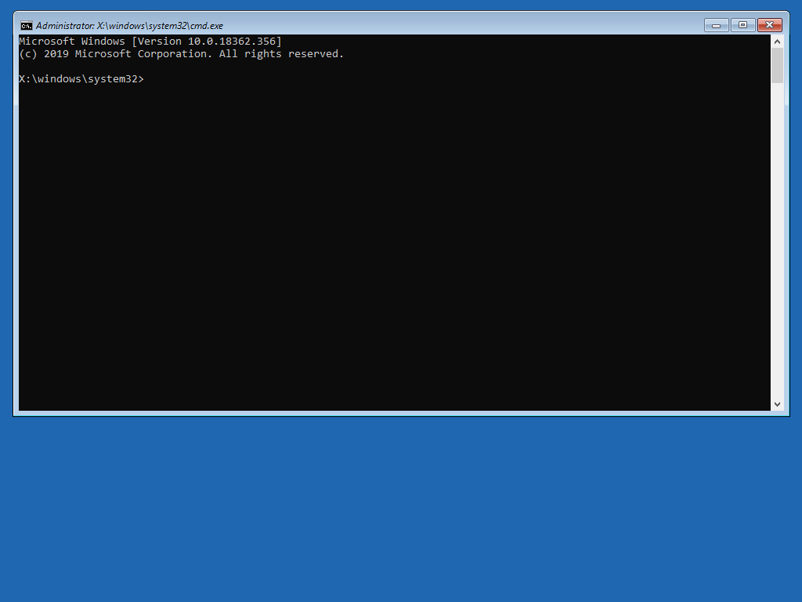
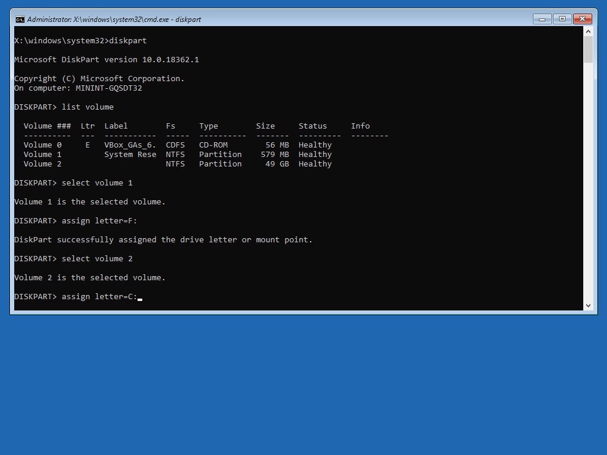

Reconfigure Windows to use AHCI¶
If the Ubuntu installer detects RST, and Windows is installed on your system, these steps enable Ubuntu to install side by side with Windows, without any loss of data and functionality.
To learn more about RST and its behavior with Ubuntu, see Intel RST during Ubuntu installation.
Back up your data¶
Any hard drive structure or configuration change, or installation of new operating systems on a hard drive that already contains data might potentially lead to a data loss.
Make sure that your personal data is safe. Even simply copying the important files to an external drive minimizes the risk of data loss.
Find the current controller mode¶
Open the Device Manager.
Under IDE ATA/ATAPI controllers, verify which controller mode is in use in Windows.
If the controller mode is set to anything other than Standard SATA AHCI Controller, you need to make a change that allows Windows to boot safely in AHCI mode. This can be done using the Registry Editor.
Change the controller mode¶
Use the following steps to switch your Windows storage controller to AHCI.
Change registry keys¶
Start Registry Editor, and navigate to the following path:
HKEY_LOCAL_MACHINE\SYSTEM\CurrentControlSet\Services\iaStorV\

In the right column, double-click the
Startkey, and change its value to0.Double-click the
iaStorVentry in the left column to expand it and select theStartOverrideentry.In the right column, change the value of the key
0to0.
Repeat these changes for the following path in the Registry Editor, if the path exists on your system:
HKEY_LOCAL_MACHINE\SYSTEM\CurrentControlSet\Services\storahci\
Disable additional storage features¶
If your system uses BitLocker, disable it. See Turn off BitLocker in Windows.
If your system uses Intel Optane Memory, disable it. See How to Disable System Acceleration with Intel® Optane™ Memory.
Switch to safe boot mode¶
Open the System Configuration app. You can find it by entering
msconfigin the Windows search menu.On the Boot tab, enable Safe boot in the Boot options frame. Confirm by clicking OK.
Change firmware settings¶
Reboot the system and start your computer’s firmware (BIOS or UEFI).
Usually, you can access the firmware by pressing the F2 or Del key during the early boot sequence.
In the firmware menu, change the disk controller type to AHCI.
The exact terminology and steps to manage the controller type in the firmware depend on the implementation by the platform vendor.
Finish and verify the changes¶
Exit the firmware and let the system boot.
Windows enters safe mode and sets up the hardware using the temporarily enabled drivers.
After Windows starts, open the System Configuration app again and disable Safe boot.
Check the controller mode in the Device Manager.
It should read: Standard SATA AHCI Controller.

Reboot. Windows starts normally.
Troubleshooting boot problems¶
After making the necessary changes to enable Ubuntu to install side by side with Windows, Windows might no longer boot. For instance, this might happen if you made the firmware change without making the registry changes in Windows. In this case, you need to recover your Windows installation.

You will most likely see a blue screen with a Stop code: INACCESSIBLE BOOT DEVICE.
Windows attempts to restart and automatically diagnose and repair the boot-related problems, but it will probably fail to complete the task itself. You need to manually launch the command prompt from the recovery screen and fix the issue.
Open the command prompt¶
On the screen that gives you the result of the Automatic Repair, click Advanced options.

From the Choose an option screen, go to .

Diagnose the problem¶
The Windows command prompt opens. Here, you can run commands to diagnose and repair problems, including boot-related issues.

From the command prompt, run the disk partition tool to see and understand the disk layout:
diskpart
Display the list of volumes:
list volume
Make sure the volume that contains Windows is correctly assigned the letter
C:.If the Windows volume isn’t
C:, you need to change this using the following commands:select volume [number]
assign letter=[letter]
For example, a “wrong” volume might be assigned the letter
C:. Select it first, assign it a different letter (e.g.F:orH:), select the volume that contains Windows, and then assign it the letterC:.
Exit the
diskpartutility:exit
Repair the problem¶
Run the
bcdedit repaircommand:bcdedit /deletevalue {default} safebootIf the previous command does not work, try alternative commands:
bcdedit /deletevalue {current} safebootbcdedit /deletevalue safeboot
If the previous command completes successfully, exit the command prompt, the Windows recovery console will restart, and Windows should load normally, with the controller mode set to AHCI.
If Windows does not start correctly, you can then manually recreate the boot loader file.
Recreating the boot loader file¶
To this end, you need to access either the System partition or the EFI partition on your computer. The Windows disk layout typically includes one of these two configurations:
A volume that contains Windows (
C:) and a small hidden partition, usually 100MB in size called System partition, formatted as NTFS. It contains the files needed to start (boot) Windows, as well as recovery tools to help you diagnose and repair your system when it does not start correctly.On UEFI-based computers, a volume that contains Windows (
C:) and a boot partition (also called EFI), typically 256-512MB in size, formatted as FAT32. This partition contains the files needed to start (boot) Windows.
You need to access the partition to make the necessary changes.
If you have already run the diskpart utility, you do not need to do anything at this point, you only need to check the letter that is assigned to this partition (e.g. letter F:).
Assuming letter F: for the boot partition, use the following commands:
Switch to the boot partition:
F:
cd boot
Move the existing boot file aside:
ren BCD BCD.bak
Create a new one:
bcdboot c:\windows /l en-us /s f: /f ALL
The
bcdbootcommand initializes the system partition by using BCD files from theC:\Windowsfolder.The options used in the command:
/l en-usUse the
en-uslocale./s f:Target the system partition assigned letter
F:./f ALLCreate boot files both for UEFI and BIOS.
Once the previous command completes, reboot. Windows should start normally.
You can now re-launch the Ubuntu installer and finish the side-by-side setup of the two operating systems.